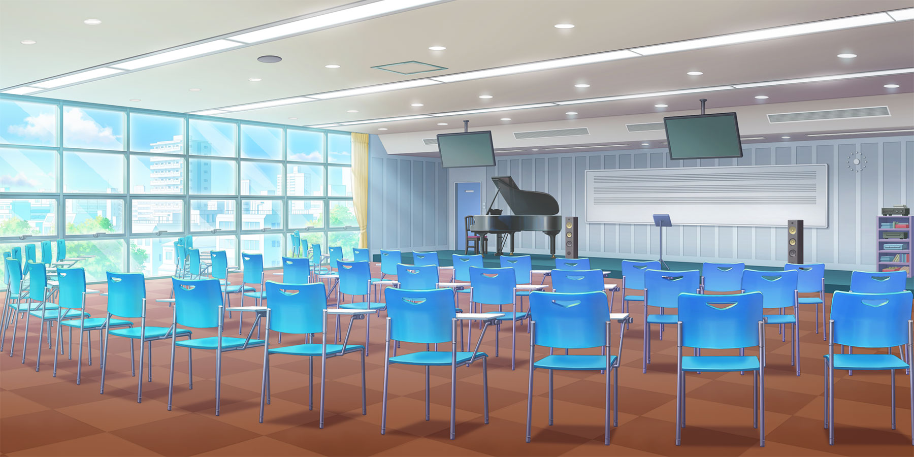
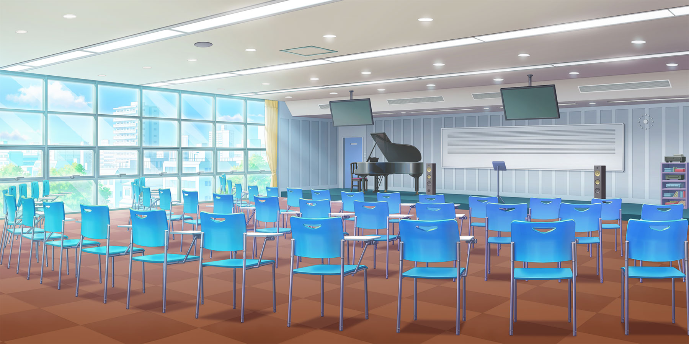
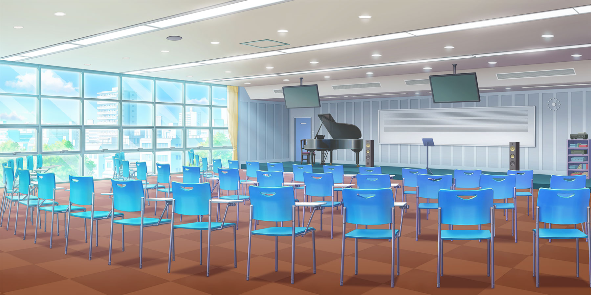

Actividades
La escuela consta de muchas actividades gracias a su amplia variedad de clubes, que van desde la literatura, musica, dance, deporte, apreciación, comida, y muchisimos mas, pero su principal es el Club De Idols
 

La escuela consta de muchas actividades gracias a su amplia variedad de clubes, que van desde la literatura, musica, dance, deporte, apreciación, comida, y muchisimos mas, pero su principal es el Club De Idols
